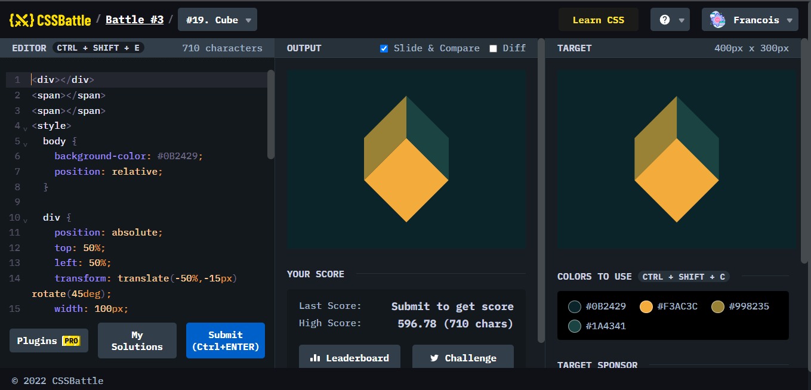
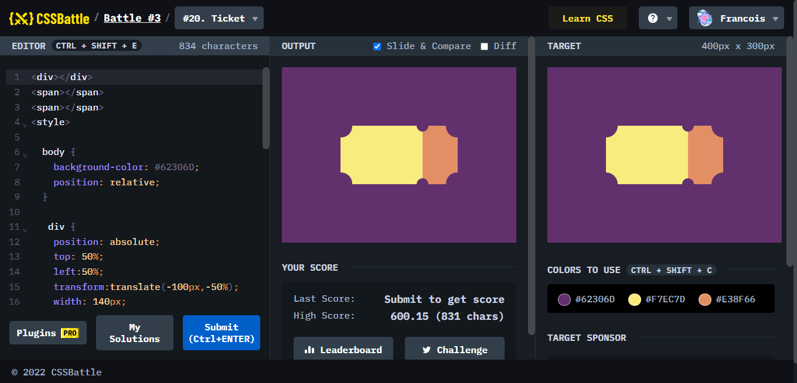

Battle.3では、2問が出題されていて、はじめての48時間という短期間の中で行われたステージのようです。

ポイント
transform:translate、skew、rotateの3つを総動員させて作る、簡単に見えて実は畜生な課題である。skewでゆがませるため、四角形の大きさが分からなくなるし、大きさを変えるごとに位置もズレるため、ぴったり作ることが今のところ唯一できなかったもの。(これだけ99.9% matchで完全一致ではない)出来た方は私に申しつけ願いたい。

ポイント
これまでにあった課題と同じで、背景色と同じ色で重ねることによって、まるでいびつな形をできるように表現したもの。しかし、この仕方しか私は思いつかなかったが、記述量が多い。工夫できる方は教えてもらいたい。